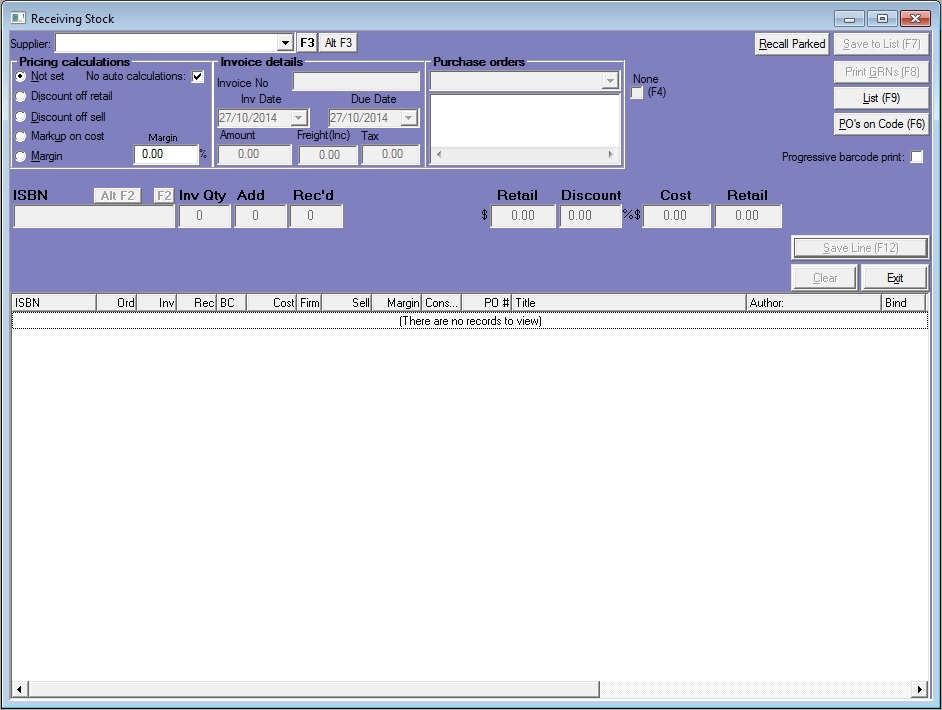
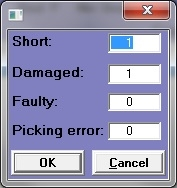
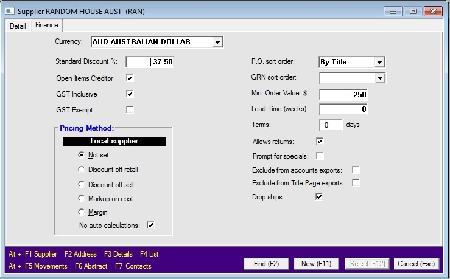
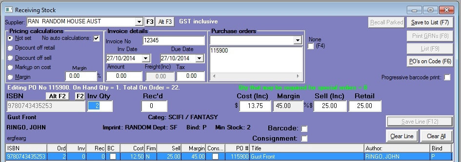
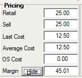
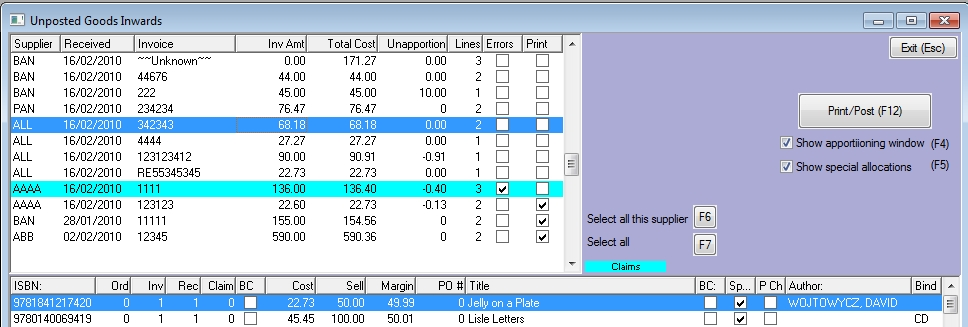
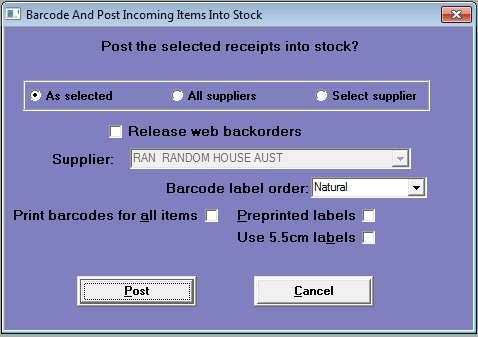
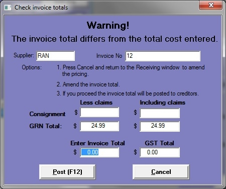

Receiving is done in the Receiving Stock window. Open the window from the main menu: Purchasing\Incoming\Receive.
Entering the supplier invoice details
The steps outlined below assume you have received the stock and an invoice from your supplier. If you do not have the invoice, you can still book the delivery into stock using a dummy invoice number which can be amended when you receive the actual invoice: see 'Receiving without an invoice' below.
The receiving window links directly with Bookscan's creditors module (if you are using that function) and exports the supplier invoice data to MYOB. So it is important that the supplier invoice fields are completed accurately.
Products are received into stock using the Receiving window. Open the window from the main menu: Purchasing/ Incoming/ Receive.
Supplier selection
| · | Select the supplier in the Supplier combo box by one of the following methods
|
| · | Type the supplier code in the field and press the Enter key.
|
| · | Use the mouse to select the supplier from the drop down box.
|
| · | Click on the F3 button (or press the F3 key) to open the supplier search window.
|
| · | Click on the Alt F3 button (or press the Alt and F3 keys) to load the last supplier that you used in the program.
|
Supplier invoice details
Then enter the following information in the appropriate supplier invoice fields:
| · | Invoice number,
|
| · | Invoice date,
|
| · | Invoice due date,
|
| · | Invoice total (including tax),
|
| · | Invoice tax (GST or VAT).
|
Purchase order selection
You will need to receive your delivery against the purchase orders with which you ordered the stock. Purchase Orders combo box drop down list will display all the selected suppliers unfilled purchase orders. Use the mouse to select purchase orders from the drop down box or type them one at a time in the field and press the enter key.
As you select each purchase order, its number will display in the multi-line box below the combo box and the outstanding lines on the PO will display in the browser.
You can receive stock without a purchase order, by ticking the None (F4) checkbox to the right of the PO fields.
(Be warned that if you do this, and the goods were ordered using Bookscan purchase orders, the purchase orders will remain as outstanding on the system. By receiving against purchase orders, the program can mark the orders as fulfilled as you post the receipt into stock).

Shortcut
If you don't know what purchase order a product is on, you can click on the PO's on Code button (F6). The edit line will clear, leaving just the barcode filed. Scan the products barcode into the Barcode field. A pop up window will be displayed, listing all the purchase orders for that product. Double click on the PO to select it.
Entering the stock
There are three ways of entering the lines of a receipt:
| · | Scanning the barcodes,
|
| · | Double clicking a line in the browser,
|
| · | Receiving off the invoice or packing slip.
|
Scanning
In this scenario you scan the barcode of each item in the delivery.
Scan the barcode into the Barcode field
(If you don't know the product code you can search for the product by clicking the F2 button to open the Title Search window. You can also click the Alt F2 button to load the last product you used in the program).
The edit line will display in scan mode:
| · | Inv Qty: this will default to quantity you have ordered on the selected purchase order. If the supplier has invoiced you for a different amount overtype this figure. In the example you have been invoiced for the full five copies of Jerilderie Letter that you order on PO #50058.
|
| · | Add: the Add field defaults to '1'. (You can overtype this if you want). This is the number you are adding to the receipt on this scan.
|
| · | Rec'd: this is the quantity you have already scanned in. In the example, three have already been scanned in and one more is being added.
|
| · | Claims: this shows the number of items that have still not been received in. If it is not subsequently scanned in, it will become a credit claim for a short-supplied item.
|
Click the Save Line (F12) button, or press the F12 button, to save the line. Then scan the next item and so on.
Double clicking
Double click a line in the browser, loads the line into browser in edit mode:
| · | Inv Qty: this will default to quantity you have ordered on the selected purchase order. If the supplier has invoiced you for a different amount overtype this figure.
|
| · | Rec'd: type in the number of this item that you have received.
|
| · | Claims: this shows that one item has still not been received in. If the Rec'd quantity is not amended, it will become s credit claim for a short-supplied item.
|
Click the Save Line (F12) button, or press the F12 button, to save the line. Then double-click the next item and so on.
Receiving off the invoice
If you have checked off the delivery against the invoice or packing slip, then you don't have to enter the receipt line by line. Use the right mouse button to open the context menu and select 'Receive all'. All the lines in the browser will show as fully received.
You can then edit any line by double clicking on it to load it into the edit line.
Receiving errors
You can also record where stock has been received damaged or faulty, the wrong product has been sent or you have been short supplied.
(Note: Depending on your supplier, you may not be able to make a claim this way. You may have to receive the stock in and then make a returns authorisation request for the damaged products. This is done in the returns area: from the main menu select Purchasing/ Returns/ Add/Change).
Load the relevant line to the edit line and click on the Claims button. The Claims pop up window will open:

The default is for the items to be set as 'short-supplied'. Type a new quantity in the appropriate field to change this. In the example above, the supplier has invoiced 3 of Gulliver's Travels. However they have only supplied one and one of those is damaged. So there are two claims, one short-supplied and one damaged.
Other settings
Barcode labels: tick the Barcode checkbox to have the program print barcode labels when posting.
Consignment: tick the Consignment checkbox to treat the stock as consignment stock. You must have purchased the consignment module to be able to use this feature.
Pricing
In the Receiving window you need to record the cost of each receipt line. You can also set the sell price and the recommended retail price (RRP) here. There are many pricing options, including receiviving stockinvoiced in a foreign currency. Click on this link for full details on pricing.
Cost prices
For each product received, the cost that you enter when processing the receipt will be set as the last cost price in the title master. It will also be used to re-calculate its average cost price.
Note: the average and last cost prices in Bookscan are stored exclusive of tax. In most cases your suppliers' invoices will display prices that are inclusive of tax.
Selling prices
If you are selling products at the recommended retail price, you will probably already have your selling price set in the title master and there will be no need to change them here. However if the price you set is to be determined by price charged to you, or if you have not yet set a selling price, you can set it here in the Receiving window. There are various price calculators built into the window to help you determine your selling price. These are detailed later in this chapter.
Note: the selling price and RRP in Bookscan are stored inclusive of tax.
Setting cost and selling prices
There are many configurations for handling prices during the receiving process. We show the simplest way first and look at some alternate methods. For the next example, the settings on the Details tab of the supplier master are as follows:
| · | GST Inclusive: the supplier's invoices show prices and totals are inclusive of tax.
|
| · | Tax exempt flag: this is set to false
|
| · | Pricing method: this is left as 'Not set'.
|
| · | Currency: this is set to the local currency.
|

With these supplier settings, the edit line of the Receiving window is configured as displayed below:

As you load a product into the edit line for the first time, the cost, sell and retail fields will display the values set in the title master (when you re-load a line, the values will be those you have saved).

Note that the cost price displayed in the master file is exclusive of tax; the cost in the Receiving window is inclusive.
If the amount you have been charged for this product on the invoice is different from the price stored in the Cost (Inc) field, type the new amount into the field. The program will calculate the margin on this line and will display it in the Margin field.
If you wish to change your selling price, type the new price into the Sell (Inc) field. Similarly you can change the RRP field here. When you post the receipt, the selling and retail prices in the master file will be updated.
Post into stock
When you have entered all lines of the receipt, click on the Save to List (F7) button. Then you can either:
| · | Move on to receiving the next delivery by clicking the Next Delivery (F7) button, or
|
| · | Move to the received goods list by clicking the List (F9) button. From here you can post deliveries into stock.
|
Receiving window: List view
In List view, the receiving window will display two browsers:
| · | The upper browser will list all receipts waiting to be posted into stock.
|
| · | The lower browser will display the lines of the receipt currently selected in the upper browser.
|

To edit a receipt, double click on it in either browser. This will close list view and return the window to the original view, with the selected receipt loaded, ready for editing.
Goods received note
Before posting a receipt into stock, you will need to print a goods received note.
You can also choose to print at the same time the following reports:
| · | Special order slips – these slips are placed with the stock to identify it as for a special order.
|
| · | Special order letters – these are letters to customers advising them that their special is ready for collection. If an email address is stored against the customer, this letter can be emailed to customer by Bookscan e-Comms.
|
| · | Title not supplied – this is a list of the specials orders for which there was insufficient stock received.
|
Posting
To post a receipt into stock, select it in the upper browser and then click on the Post (F9) button. This will open the Barcode & Post window.

Here you can choose which receipts to post:
| · | the selected receipts,
|
| · | all suppliers, or
|
| · | all receipts for the selected supplier.
|
You can set some barcode labels printing options:
Print Barcode for all items: Forces the printing of barcodes, overwriting any earlier setting. You can also choose the label type.
Preprinted labels: Tick this checkbox if you have labels with a pre-printed logo.
Release web backorders: Tick this to release stock to fill e-Web backorders.
Click on the Post button to proceed.
If the total value of the received stock, including the value of any credit claims, is equal to the supplier invoice total, the receipt will be posted into stock and you will have finished.
If the amounts are not equal, the Check Invoice Totals window will display:

To ensure that the cost of goods matches your accounts payable, the total cost of your receipt should equal the supplier invoice total. If they a different, you should return to the Receiving window to amend your costs, though you can proceed with posting if you wish.
You can also amend the invoice and tax totals here.
Click the Post (F12) button to post the receipt or click the Cancel button (or press the Escape key) to return to the Receiving window.
Effects of posting
For each line of the receipt
| · | If the barcode label flag has been set, barcode labels will print.
|
| · | The last cost price in the title master will be overwritten with the unit cost of this receipt line.
|
| · | The selling and retail prices in the title master will be updated.
|
| · | Stock will be assigned to special orders.
|
| · | The on hand stock level will be increased.
|
| · | The purchase order lines relating to this receipt will be marked as received. Completed purchase orders will be deleted.
|
| · | The total of the supplier invoice will be posted to the accounts payable file and can be viewed in the Creditors window (if you are using the Creditors module).
|
| · | The supplier invoice details will be saved to the receiving history files, ready for export to MYOB.
|
| · | A line will be added to the stock history file. This can be viewed in the Stock History tab of the title Master window.
|
Other settings in the receiving window
Barcode Printing
You can choose to print barcodes either progressively, as you enter each line, or later when you post the receipt into stock.
For progressive printing, tick the 'Progressive Barcode Print' checkbox located at the centre right of the Receiving window. With this flag set, barcodes will print as you press Save Line (F12) for each product.
Note: The default setting for printing of barcodes is set on the Purchasing tab System options. Here you can choose to always print or never print barcodes.
List view - upper browser
Errors column
In the upper browser, where deliveries had errors on them, the Errors column will display a tick. When you post, these lines will create a credit claim. To produce a Request for Goods form instead, double click on the Claims field to untick it.
List view - lower browser
Over Supplied
It will mark a line of an invoice in green if the quantity coming in is greater than the order quantity. (Where you receive lines against no Purchase Order; all these lines will be indicated in green).
Special Orders
Where there are special orders attached to a product in the browser, the 'Spec' column will display a tick.
Price Change
Products where you have changed a selling price during the receipt, will display a tick in the 'P_Ch' column of the browser. Also, when processing a line, if you change the selling price and there is stock on hand, the program will warn you that you may need to r-label your existing stock.